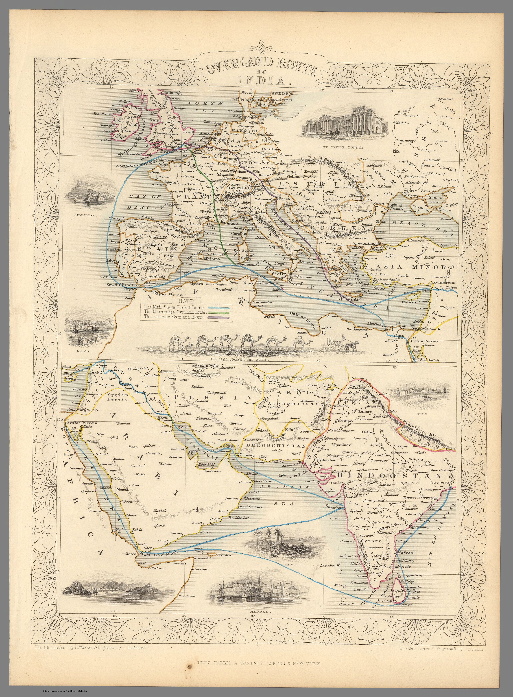
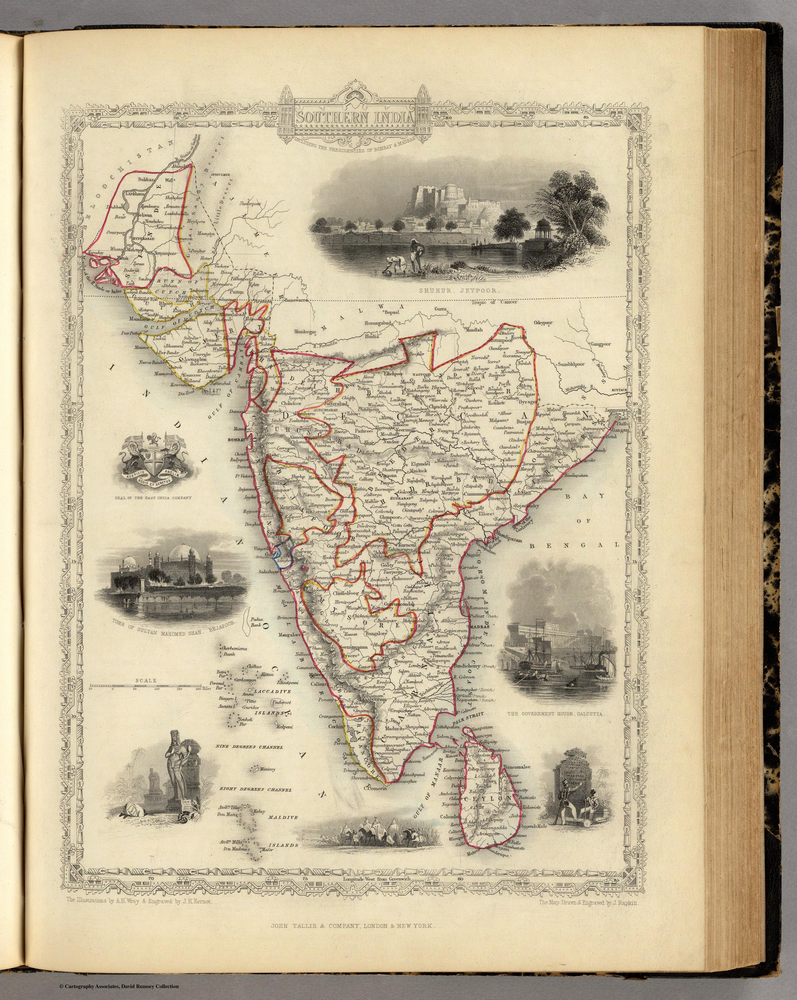
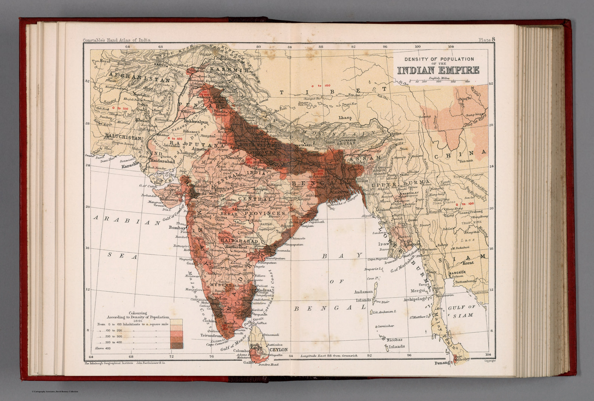
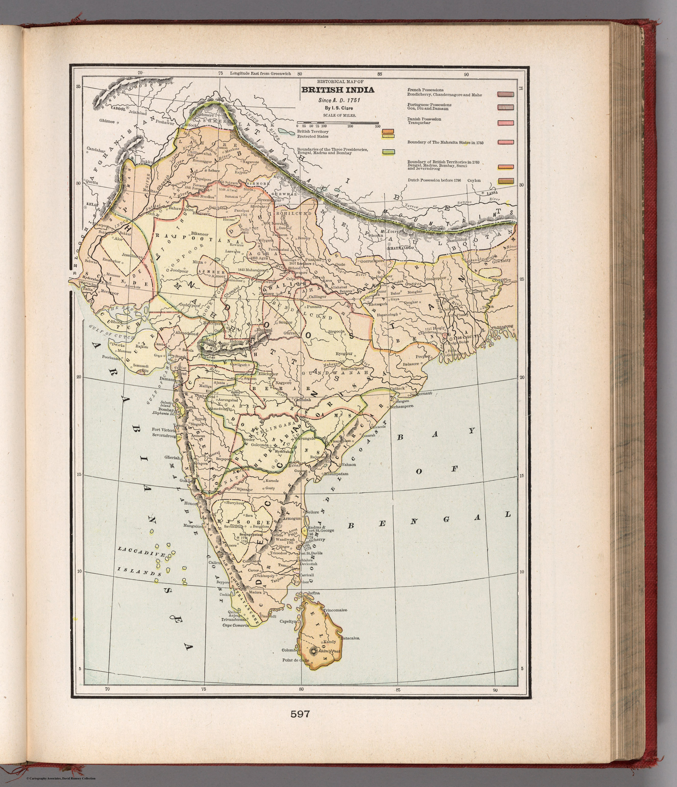

Room 05
Administered Empire and Victorian Atlas
At the height of empire the gaze turns analytic. India is no longer merely outlined but dissected — into presidencies and districts, densities of population, lines of rail and telegraph. The thematic maps of high-Victorian cartography render the subcontinent as an object of administration and knowledge: something to be counted, coloured and managed.
 Map of the Northern Part of the Punjab and of Kashmir1846
Map of the Northern Part of the Punjab and of Kashmir1846
Overland Route To India1851
Southern India Including The Presidencies Of Bombay & Madras1851 India XI1856Hindoostan1857Abington’s Panoramic View of India1858Südost-Asien1866
India XI1856Hindoostan1857Abington’s Panoramic View of India1858Südost-Asien1866 India 111883
India 111883
Density of population of the Indian Empire. Plate 81893India : Land surface features. Plate 41893
Historical map of British India. Since A.D. 17511901